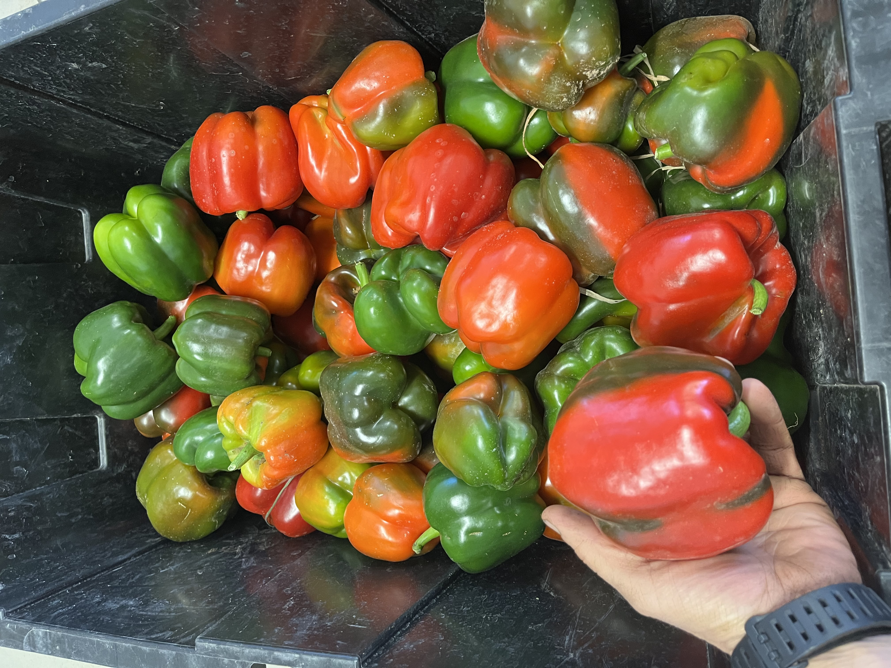
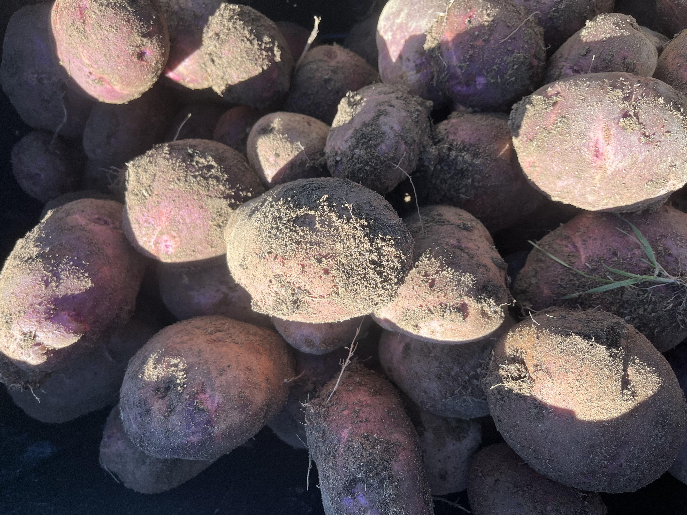

Our 2026 harvest is a celebration of crop diversity and seasonal abundance, bringing the freshest flavors of the field directly to your table.
As the seasons shift, you can look forward to a vibrant pantry of staples and specialty treats:
We kick off the year with crisp Lettuce Mixes, peppery Radishes, and the sweet, apple-like crunch of Hakurei Turnips.
When the sun peaks, our fields overflow with fragrant Basil, sun-ripened Tomatoes, and a rainbow of Peppers and Hot Peppers. Cool off with hydrating Cucumbers or enjoy the tender bite of our Yellow Squash, Zucchini, and silky Eggplant.

Our soil provides a steady supply of earth-sweet Carrots, Beets, and Parsnips, alongside kitchen essentials like Garlic, Onions, Scallions, and hearty Potatoes.

As the air cools, we transition to the creamy sweetness of Butternut and Spaghetti Squash, paired with vibrant Watermelon Radishes and snap-fresh Beans.
Every seed is planted with a commitment to regenerative soil health, ensuring that the food we grow for you in 2026 is as nourishing for the planet as it is for your family.